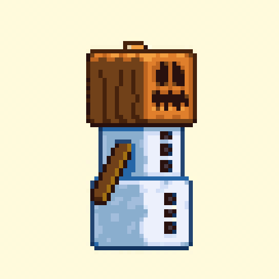
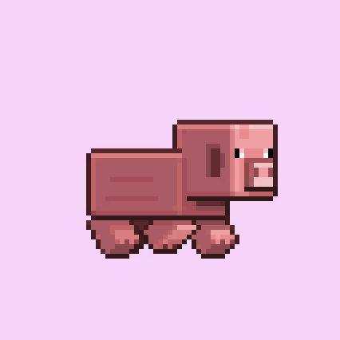

TURTLE HUB - это майнкрафт сервер на версии 1.16.х - 1.19.3 предназначенный
для ванильного развитие но с другими игроками и своими фишками такими как крафт невидимого освещения,
голосовым чатом, эмоциями, уникальными предметами, метеоритами.


Что такое метеориты? Это событие котороє появляется в случайном месте в 18:00
по МСК или 17:00 по Киеву и оповещает игроков в чат о своем местоположении. В нем появляются уникальные
предметы, от драгоценностей до алмазной лопаты на прочность 4
Что такое уникальные предметы? Это вещи которых нету в обычном майнкрафт но
есть здесь, чтобы было интересней играть. Например рюкзаки или предметы с зачарованиями выше
максимальных значений прочность 4, эффективность 6. И другие предметы